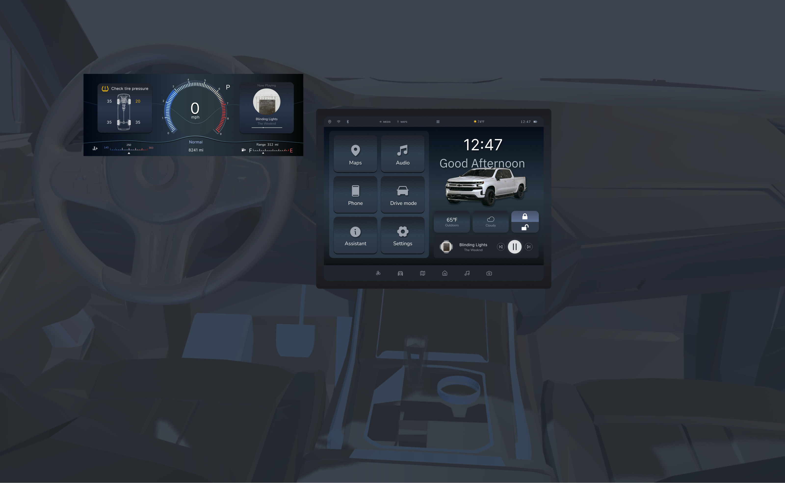
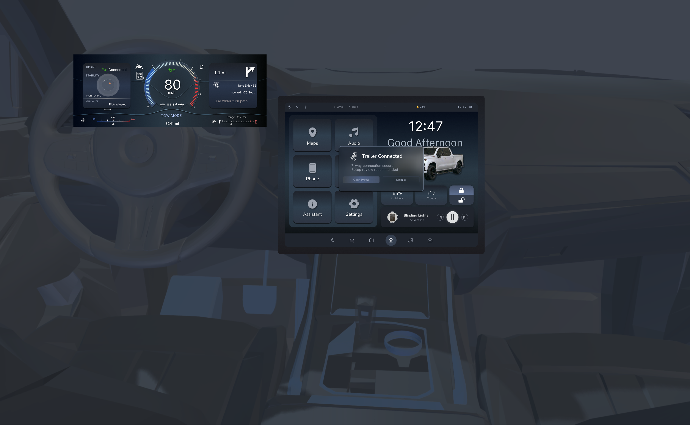
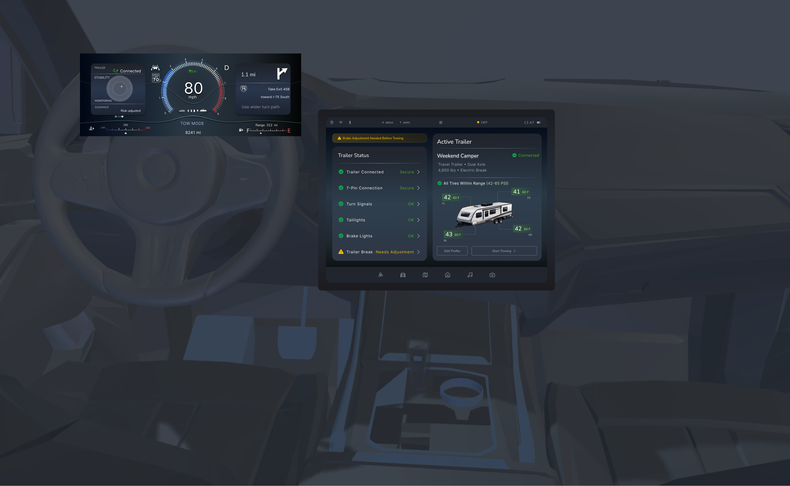
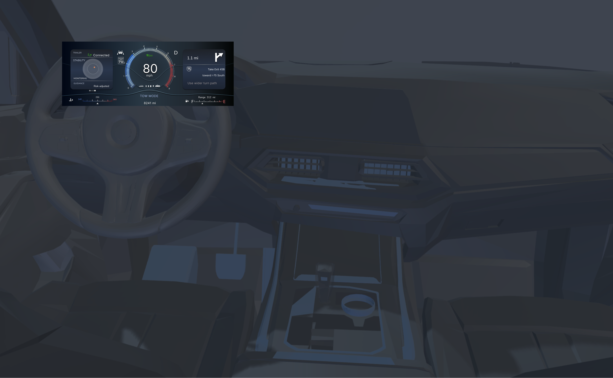

Detect
The interface recognizes the trailer and offers the next relevant action without taking control away.
SILVERADO RST 1500 / 2026
A context-aware interface concept connecting the cluster and center display around what the driver is doing.
Scroll to enter the cockpit ↓

Scroll to move from the full driving environment into the interaction.
GUIDED PROTOTYPE / ORIGINAL FIGMA UI
Follow one focused task through the cluster and center display. Each highlighted target is part of the original design.



WHY THIS FLOW
The interface recognizes the trailer and offers the next relevant action without taking control away.
Completed checks stay visible but quiet. The unresolved brake adjustment receives the strongest emphasis.
Once towing starts, Tow Mode moves into the cluster, where it remains legible in the driving context.